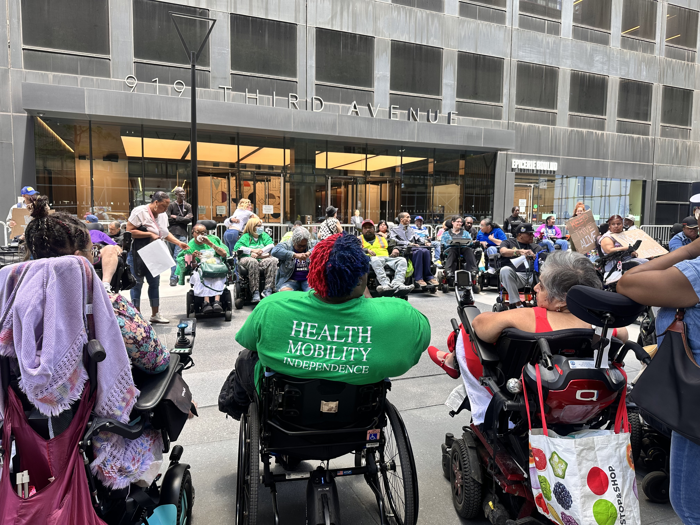
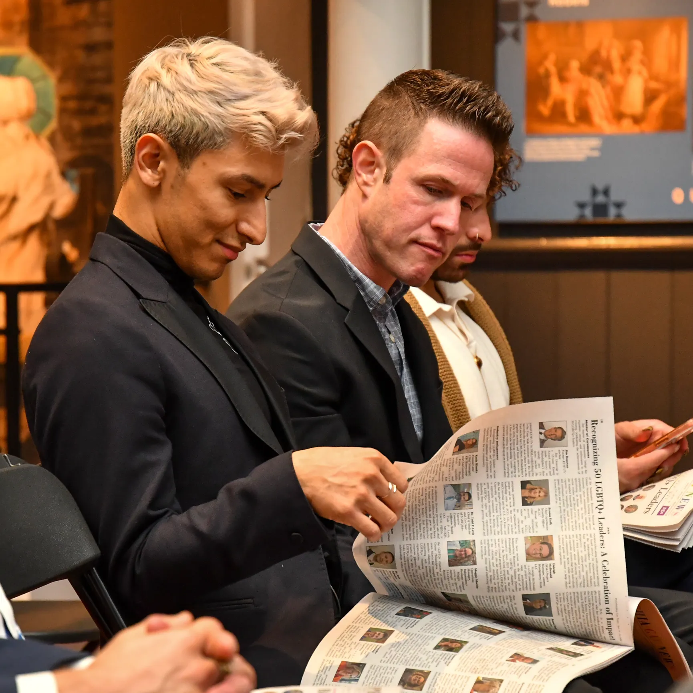
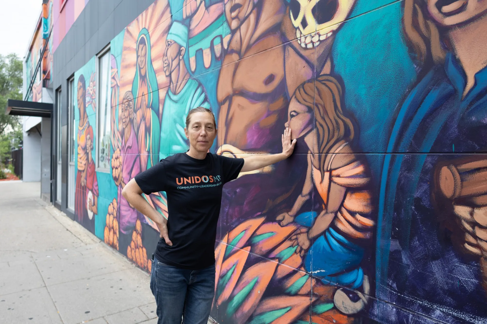
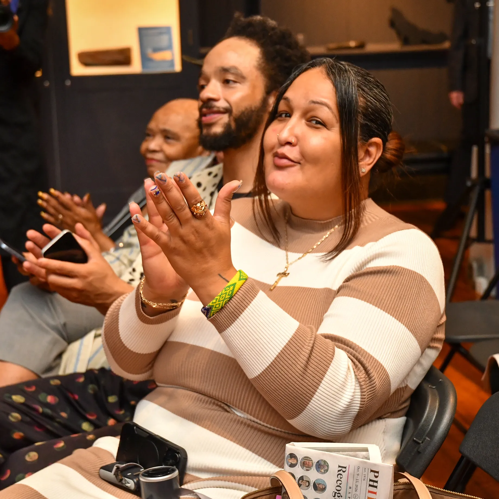

|
|
|
|
|
In the final weeks before an election, especially one that will determine the balance of power in Washington, horse-race coverage can seem to drown out all else.
But at many community media outlets across the country, reporters are focusing their time on coverage that centers their audience’s needs on Election Day. Those needs vary: sometimes it’s about the ability to mail a ballot in time for it to be counted, or to enter a polling place safely, or to make a decision based on real facts and not targeted disinformation.
In this month’s CCM Spotlight on Community Media, we lift up examples of disability-focused reporting, Indigenous media, the LGBTQ+ press, and immigrant and diaspora newsrooms – examining how they serve information needs and enable fuller participation in our democracy.
|
|
 Photo Credit: Executive Director, Joe Rappaport at Brooklyn Center for Independence of the Disabled.
|
Disability Media: Accessibility and Accountability
For Able News, a New York City publication that has covered disability rights and policy since 1989, election coverage starts long before Election Day. In a state with over 2.3 million eligible voters with disabilities, it is one of the few newsrooms staffed by reporters with disabilities who audit voting machines, poll site ramps, and ballot access in real time.
Able News Editor Joie Tyrrell runs a team largely made up of journalists and freelancers with disabilities, ensuring lived experience drives their political accountability. The newsroom has secured interviews with candidates and elected officials, including NYC Mayor Zohran Mamdani, whom staff writer Christopher Alvarez pressed on expanding city agency hiring for disabled New Yorkers and improving transit accessibility. To stretch its reporting capacity, Able News also teamed up with journalism students from Stony Brook University to fan out across Nassau and Suffolk counties, monitoring local boards of elections to ensure poll sites are physically accessible on voting day.
For regular columnist and disability justice activist Marcus D. Johnson, reporting is about the community's day-to-day survival. Johnson is a Black man with a spinal cord injury since 1991, who co-leads the Civics League for Disability Rights. Johnson was part of a group that organized to prevent the closure of Independence Care System, a Medicaid-funded nonprofit that ran NYC's only specialized care program for adults with physical disabilities. He recalled the community coming together to testify, mobilize, and lobby state officials for emergency funding. In the end, the state declined to intervene, and the organization was forced to close, leaving some 1,300 people with no alternative but to seek care elsewhere. Johnson sees his
role as making sure voters don’t forget this blow to their community in the upcoming election.
As Election Day draws closer, Able News also layers in reporting about the physical barriers outside and inside polling places. With reporters who know exactly what kinds of challenges affect their readers on Election Day —because they too are affected by accessibility issues —coverage looks at polling entrance ramp compliance, whether poll workers know how to operate accessible voting machines, and whether assistive technologies, including Sip-N-Puff devices for voters who navigate ballots through breath controls, audio-tactile keypads with headphones for blind and low-vision voters, and high-contrast, large-print screens for people who struggle with standard visual displays. For New Yorkers with disabilities, approximately 16 percent of the state electorate, compliance with ADA rules and added accessibility features could be what stands between them and their ability to
participate in the bedrock of our democracy.
The newsroom practices what it preaches: Able News tests every article, digital guide, and voter toolkit with screen readers, magnification software, and video captions before publication to ensure the people it's intended to serve can read and use the content.
|
|
Julie Johnson, Lummi Nation, co-chair of the Native Vote committee at the Affiliated Tribes of Northwest Indians (ATNI), addresses those gathered to vote on resolutions at the ATNI annual convention in Snoqualmie, Washington, on September 17, 2026. (Nika Bartoo-Smith / Underscore Native News + ICT)
|
Indigenous and Native Media: Tracking Representation and Access
Voting on tribal land comes with its own set of challenges. Take, for example, mail-in ballots. Mail on rural reservations can take weeks to arrive, partially complicated by non-standard street addresses. In some tribal areas, people have to drive for hours on dirt roads just to find a drop box.
For local newsrooms serving a general audience, coverage of these issues might not seem worth the time. But for Native and Indigenous media, mail-in ballot complications are a critical election-season story. Joint reporter for Underscore Native News + ICT News, Nika Bartoo-Smith took this issue on directly by covering warnings raised at the Affiliated Tribes of Northwest Indians (ATNI) annual convention. In her investigation of vote-by-mail hurdles in Washington and Oregon, tribal leaders pointed out how state deadlines clash with postal delays. A postmark often shows when mail arrives at an urban sorting plant, not when people drop it off locally. This gap means rural ballots can be rejected for arriving after the legal deadline. In response, leaders like ATNI President Leonard Forsman urged voters to vote early and bypass mail delays entirely by using local drop boxes.
Bartoo-Smith teamed up with Lyric Aquino, Underscore Native News staff reporter and Report for America corps member, on another story largely overlooked by mainstream outlets: statewide ballot measures affecting tribal sovereignty and bodily autonomy. In Washington, their reporting examined an ATNI resolution opposing two separate ballot measures: Initiative 001, which would restrict transgender student athletes from competing on sports teams matching their gender identity, and Initiative 638, which would open student medical and mental health records.
While these are statewide initiatives rather than tribal laws, they directly threaten Native families with children attending Washington public schools. Many tribal nations have long-standing traditions recognizing Two-Spirit and gender-expansive individuals, leading ATNI and Indigenous advocates to view state-level restrictions as a direct threat to both youth safety and tribal sovereignty.
Shelby Chestnut, a citizen of the Assiniboine Nation on the Fort Peck Reservation and executive director of the Transgender Law Center, asserted, in the story, that the tribal resolution was a deliberate assertion of self-governance. "It is saying not only are we not standing for hate in our state and in our region,” she said to Aquino, but also, “we’re saying our Two-Spirit and trans community members are valued assets of our community."
Rather than seeing Native voters as a monolithic demographic, newsrooms like ICT News and Underscore Native News focus their reporting on local civic issues. By working together, they followed Indigenous candidates running for local offices such as school boards, city councils, and county commissions, roles that oversee local resources, tribal relations, and public education. Bartoo-Smith, who tracked 117 Indigenous candidates in 17 states, found that local
positions make up more than half of all Native general-election campaigns nationwide. This kind of tracking helps Native voters see who holds power in their communities and shows that Indigenous candidates are running across party lines, highlighting a politically diverse landscape.
|
|
 Photo Credit: Kelly Burkhardt
|
LGBTQ+ Press: Specialized Reporting and Safe Access
Election season offers LGBTQ+ media another chance to move beyond superficial campaign soundbites and an opportunity to demonstrate that their community is complex, rapidly growing, and not a simple small voting bloc. In Pennsylvania, Philadelphia Gay News, founded in 1976 and is one of the nation's oldest weekly LGBTQ publications, focuses on the electoral power of this shifting demographic. In an analysis of how the LGBTQ+ vote could decide control of Congress, the paper examined voting data showing that LGBTQ+ voters now account for
roughly 8% of the electorate, double the 4% recorded two decades ago. With Gallup estimating that over 9% of U.S. adults now identify as LGBTQ+, PGN founder and publisher Mark Segal believes that rapid growth comes with a specific editorial responsibility.
"Since mainstream media rarely examines LGBTQ+ voting patterns or the issues that directly affect our community, LGBTQ+ media has a special responsibility,” Segal told CCM. “Like other community-based news organizations, our mission is to provide the information, research, and insight our readers need to make informed decisions at the ballot box, with a clear understanding of how those decisions may affect their lives and their rights."
Fulfilling that mission takes shoe-leather work. In its coverage of key Pennsylvania races, PGN vetted contenders in races across the state, from the governor's office down to tight state Senate fights. The newsroom pulled legislative votes, scrutinized past statements on nondiscrimination bills, and pressed candidates on healthcare and civil rights. Segal noted that while close ties to local officials and campaign staff get reporters in the room, those relationships cannot get in the way of tough, honest coverage.
At TransLash Media, an independent news organization that tells trans stories to save trans lives, election reporting focuses on an immediate barrier for many transgender voters: getting past the check-in table.
In an investigation on how federal voter legislation could be used to disenfranchise trans voters, TransLash Wire reporter Adam Rhodes looked at the consequences of proposed federal legislation such as the SAVE America Act, which would require a strict form of photo ID and proof of citizenship to vote. The piece examined the impact of confusion over changing ID rules in states that already have very restrictive policies on updating gender markers on driver's licenses and birth certificates.
"It happens all the time, and I think the fear of being perceived is enough to already curtail people from wanting to attempt to go vote with having to hand their ID off to a stranger," Jody Herman, a senior researcher at the Williams Institute, told Rhodes for their investigation.
The report addressed anxious readers' confusion by making it clear that federal registration rules haven't changed. It points to the practical resources available from civil rights groups to assist voters in dealing with state ID rules and in getting their vote out.
|
|
 Ulla Nilsen, lead organizer for Unidos MN, pictured on August 20, 2026. Photo Credit: Dymanh Chhoun | Sahan Journal
|
Immigrant and Multilingual Press: Voting in the Age of ICE Crackdowns and Disinformation
In the lead-up to consequential elections, a primary threat on the minds of diaspora and multilingual newsrooms is mis- and dis-information. In these communities, false claims and rumors can spread quickly, making people afraid to get involved in civic life. Instead of waiting until rumors take hold, these newsrooms focus on real-time fact-checking and make it a priority to listen to their communities while reporting.
Enlace Latino NC is North Carolina's first Spanish-language digital newsroom, and community verification is a regular part of its work. With over 5,000 subscribers in its WhatsApp community network, it constantly checks tips, reader questions, and unverified claims. When a rumor circulated that naturalized citizens could be subject to immigration enforcement at early voting locations, they responded immediately through Spanish-language verification reporting, audio messages, direct messages, practical guides on voters' rights, and their full 2026 Election Guide.
In Minnesota, Sahan Journal has been tracking how immigrant and refugee communities convert their grassroots mutual aid networks into actual voting power. Joey Peters' reporting showed how the local advocacy group Unidos MN took networks that were originally set up to monitor federal immigration raids and repurposed them for block-by-block election outreach. Rather than doing traditional canvassing, they use their Signal groups and parish volunteers (at churches like Ascension Catholic Church in north Minneapolis) to help families register and plan their route to the polling place. As parish organizer
Francisco Escamilla told Sahan Journal, anchoring voter education in the shared experience of protection is the key to overcoming the historical reluctance to vote. "At my church, and Latinos in general, we haven’t been the most present when it comes to voting (sic),” Escamilla said. “So it’s pointing out to people that everything that’s happened in the surge could happen again, and by going out and voting, you have an impact, you have power."
Founded in 1999, The Haitian Times reports on the diaspora's growth from what its founders described as "transient exiles" into a vibrant political community. In its election coverage, the newsroom aims to "humanize policy decisions" for Haitian-American voters. While the 2024 presidential race forced staff to spend heavy resources debunking viral attacks in places like Springfield, Ohio, editor-in-chief and publisher Vania Andre noted that their midterm focus shifted toward closing critical information gaps. According to Andre, having reporters and contributors on the ground in Florida, New York, and Ohio allows the newsroom to zero in on elections with immediate stakes for its readership. Those key contests include the Florida
governor's race between Byron Donalds and David Jolly, as well as the open race to replace retiring Representative Frederica Wilson in Florida's 24th Congressional District, home to one of the largest Haitian communities in the country.
Having reporters in local communities helped reveal important gaps in national news coverage. Andre noticed that voters often did not hear about Senate Bill 4814, a bill from Massachusetts Senator Ed Markey that would extend Temporary Protected Status for Haiti through 2029. For families dealing with immigration uncertainty, this bill links national politics to their everyday lives.
Reporting in these areas also means being careful. In places like Springfield, Ohio, where Haitian residents have faced harassment and bomb threats, the newsroom considers safety before sending reporters out. Andre explained that when someone’s accent or race can make them a target, journalists must make sure interviews do not put anyone at risk.
|
|
 Photo Credit: Kelly Burkhardt
|
Meeting the Logistics of Democracy
Casting a ballot may seem like a straightforward activity, but seen through the lenses above, for many in our country it’s anything but simple. Community media knows this and structures their reporting accordingly—whether that means helping their audience navigate physical barriers, confusing state laws, or targeted disinformation. The newsrooms highlighted – and thousands more across the country – report in the run-ups to elections to ensure as many people as possible are able to arrive and access their polling place on November 3, with an informed understanding of what’s at stake for their families and neighbors.
Voting Resources and Hotlines
With Election Day tomorrow, here are a few resources we’ve compiled and wanted to share. If you or voters in your area have registration questions, equipment problems, or obstacles at the polling place, nonpartisan election protection networks offer direct assistance:
Registration and Polling Locations: Check your state's registration deadlines, early voting locations, and acceptable voter ID rules at Can I Vote (National Association of Secretaries of State) or Vote411 (League of Women Voters Education Fund).
Nonpartisan Election Protection Hotlines: Coordinated by the Lawyers' Committee for Civil Rights Under Law alongside national civil rights partners, these lines connect voters directly to trained volunteers and legal staff to assist in resolving issues at the precinct level:
- English: 866-OUR-VOTE (866-687-8683)
- Spanish: 888-VE-Y-VOTA (888-839-8682)
- Asian Languages (Mandarin, Cantonese, Korean, Vietnamese, Tagalog, Hindi, Urdu, Bengali): 888-API-VOTE (888-274-8683)
- Arabic: 844-YALLA-US (844-925-5287)
- American Sign Language (video call): 301-818-VOTE (301-818-8683)
Disability Rights and Machine Access: For specific accessibility issues, voters can contact their State Protection and Advocacy (P&A) Agency through the National Disability Rights Network.
|
Share With Us
Thank you for the essential work you do every day to keep our communities informed and resilient. As we move our 2026-2028 Strategic Plan into action, CCM is committed to generating the shared knowledge, elevating the excellence, and unlocking the transformative opportunities our sector deserves. We are honored to be in this work with you as we continue to build collective power across the field.
Our sector thrives when we learn from one another. Please share your community media news, innovations, job postings, resources, or reporting with LaMonte Guillory, Director of Communications Strategy, at lamonte.guillory@journalism.cuny.edu so we can continue to shine a wider and brighter spotlight on excellence in community and ethnic media on journalism's main stages.
|
|
|
|